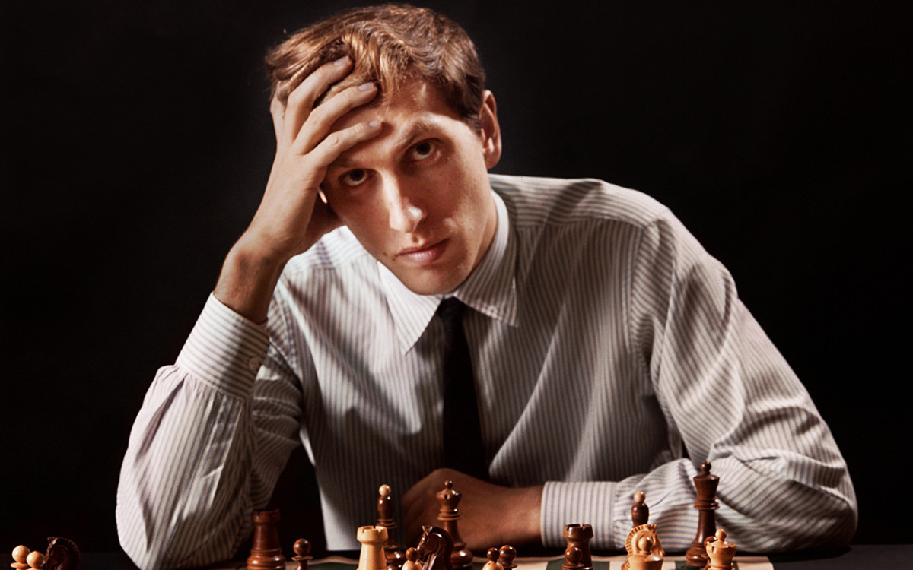

Bobby Fischer
Filho de pai alemão, Hans-Gerhardt Fischer, um biofísico, e mãe suíça naturalizada norte-americana, Regina Wender, aprendeu a jogar xadrez aos seis anos com sua irmã mais velha, que o entretinha com diversos jogos enquanto a mãe ia trabalhar. Mudou-se cedo para a Califórnia e, pouco tempo depois, para Nova Iorque, onde pôde desenvolver-se em grandes clubes seculares como o Marshall e o Manhattan.
Aos treze anos, jogou a "Partida do Século" num torneio de Mestres em 1956 contra Donald Byrne. Fischer venceu também o campeonato americano oito vezes em oito participações, sendo a primeira aos catorze anos em 1957. De dezembro de 1962 até o fim da sua carreira, em 1992, Fischer venceu todos os torneios que disputou, exceto dois.
A principal façanha da sua carreira foi a classificação para chegar à final do mundial contra Boris Spassky. Fischer venceu Taimanov, Larsen e Petrosian de forma impressionante. Em 1992, Fischer voltou a disputar um encontro contra Spassky, vencendo novamente com diversas novidades teóricas, apesar de estar afastado do xadrez há 20 anos.
Fischer foi preso no Japão e lutou contra sua extradição para os Estados Unidos por quase um ano. A Islândia ofereceu cidadania a Fischer, que aceitou e seguiu viagem para lá em 2005. Em eleição feita pelo Sahovski Informator, Fischer foi considerado pelos grandes mestres como o melhor enxadrista do século XX.
Bobby Fischer morreu em 17 de janeiro de 2008, na Islândia, aos 64 anos.